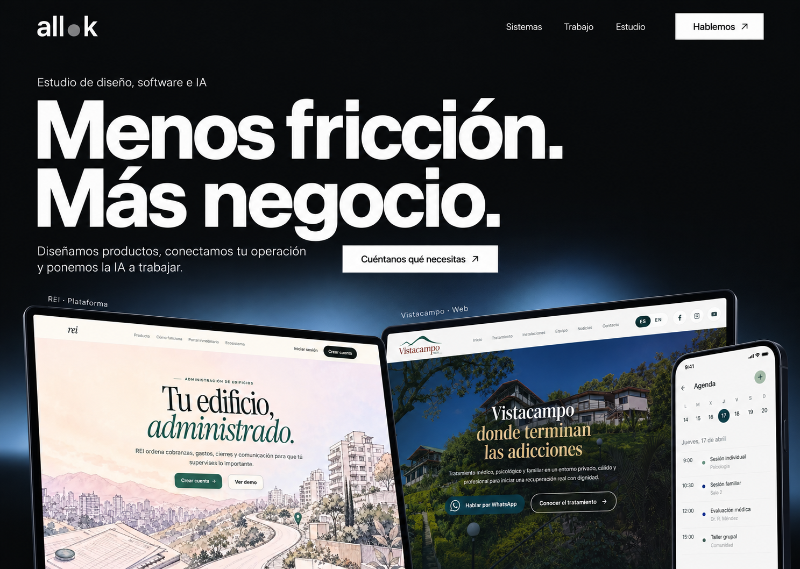

Recommended direction
A / Open Systems
A clear business promise, a dark opening and the products as the proof. The strongest continuation of allok’s existing commercial identity.
What stays constant
Design, software and AI.
A founder-led studio for real business operations. Spanish for LATAM. Named projects, clear services and a direct conversation. No invented results, pricing or awards.
Positioning and search direction
The homepage should say what allok builds and for whom. Keep the expressive headline, then name the services in visible text: AI agents, custom software and product design. Follow with original case studies explaining the business problem, the actual system and evidence. Search and AI visibility come from clear, crawlable expertise; a visual redesign alone cannot establish rankings.
Read the positioning and search notes ↗Image prompts and provenance ↗Generated design concepts, not screenshots of a deployed website. UI details in these composites may differ from the original products. The interactive prototype uses source project screenshots.